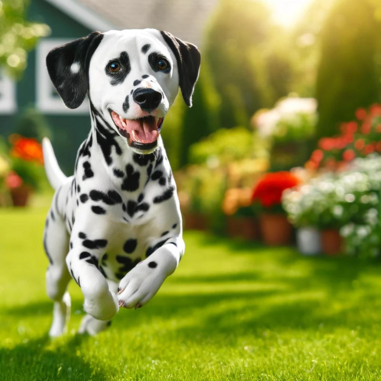

Spotlight on Dalmatians: Your Guide to This Unique Breed

Introduction
Dalmatians are a distinctive and striking breed of dog, instantly recognizable by their unique black or liver spots on a white coat. Originally from Dalmatia, Croatia, they have a rich history as carriage dogs, firehouse mascots, and loyal companions. This article delves into the unique characteristics and care requirements of the Dalmatian breed, ideal for anyone interested in Dalmatian dogs, Dalmatian puppies, or inspired by the famous Dalmatian 101 movie.
Breed History
The history of Dalmatians dates back to ancient times, with spotted dogs depicted in Egyptian tomb paintings. In the 18th century, Dalmatians gained prominence in Dalmatia, where they served as carriage dogs to protect horses and carriages. Their dependable nature and distinctive appearance also led to their role as firehouse mascots in the United States, where they would clear the way for fire wagons.
Physical Characteristics
Dalmatians are medium-sized dogs known for their striking coat pattern:
- Size: Males typically stand 22-24 inches tall and weigh between 60-70 pounds, while females are slightly smaller.
- Coat: Their short, dense coat features well-defined black or liver spots on a white background. Dalmatians have an athletic and graceful gait, showcasing their agility.
Temperament
Dalmatians are known for their energetic, playful, and intelligent personalities:
- Activity Level: Highly active dogs that require significant daily exercise. They thrive on physical activities like running, hiking, and playing fetch.
- Personality: Affectionate and loyal to their families but can be aloof with strangers. They are excellent watchdogs due to their alertness and protective nature.
- Training Needs: Consistent training and early socialization are crucial to channel their energy positively and prevent behavioral issues.
Care Requirements
Caring for a Dalmatian involves several key considerations:
- Exercise Needs: Dalmatians require substantial daily exercise to maintain their health and prevent destructive behaviors. Activities like running and hiking are ideal.
- Grooming: Their short coat needs regular brushing to remove loose hair and maintain a healthy shine. They shed throughout the year, so frequent grooming is essential.
- Training and Socialization: Dalmatians are intelligent but can be independent and stubborn. Positive reinforcement training methods work best. Early socialization helps ensure they are well-behaved and comfortable around different people and environments.
- Health Considerations: Generally healthy but can be prone to conditions such as deafness and urinary stones. Regular veterinary check-ups, a balanced diet, and plenty of fresh water are crucial for their well-being.
Dalmatian vs. Other Breeds
Dalmatians are often compared to other active breeds like Border Collies and Australian Shepherds:
- Distinct History: Unlike Border Collies and Australian Shepherds, Dalmatians have a unique history as carriage dogs and firehouse mascots.
- Appearance: Their distinctive coat pattern sets them apart from other breeds.
Fun Facts about Dalmatians
- Spotting: Dalmatians are born white, and their spots develop as they grow. Each Dalmatian’s spotting pattern is unique.
- Firehouse Dogs: Historically used to clear the way for fire wagons and keep horses calm.
- Movie Stars: Gained widespread popularity through their portrayal in the Disney Dalmatian 101 movie, inspiring many to seek out Dalmatian puppies.
Conclusion
Dalmatians are a beautiful and energetic breed, ideally suited for active and dedicated owners. If you can meet their exercise, grooming, and training needs, Dalmatians will reward you with loyalty and affection. Their distinctive appearance and lively personality make them a unique and cherished addition to any household, whether you are looking for a Dalmatian dog or Dalmatian puppy.
Want to gain a deeper understanding of dog behavior and how to care for them? Click the link below to read more related articles. read more related articles
Looking for products for your cat or dog? Check out the articles linked below for more information and recommendations. Explore more articles